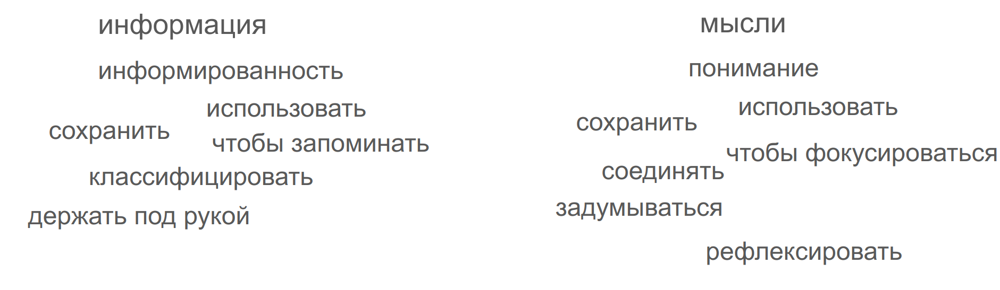

“Заметки” — термин очень общий. Это и какие-то свои мысли. Это и цитаты из книг. Это и примеченные рецепты по кулинарии. Нужно ли вам всё это разнообразие? Хотите ли вы тратить время на запись, на построение Системы и на работу с ней? Эта статья должна немного помочь определиться — стоит оно усилий или нет.
Типы и цели заметок
Главная развилка для заметок — “информация” или “понимание”. Вы “собираете” или “творите”. Сосредотачиваетесь на “информированности” или “понимании”.
Example
- Сохранить день рождения друга или идею для подарка ему — “информация”
- Посчитать и сохранить время в пути — “информация”
- Сохранить описание алгоритма Дейкстра — “информация”
- Сохранить алгоритм подключения к программе — “информация”
- Сохранить формулу преобразования временного сигнала в частотный спектр — “информация”
Example
- Связать идею Единого Источника Истины из программирования с такой же идеей в сохранении заметок — “понимание”
- Обдумать, какие варианты речей бывают на публичное выступление — “понимание”
- Разобраться, что скрывается за идеей “понимания” — “понимание”
- Найти “за” и “против” для идеи “съесть лягушку по утрам” — “понимание”
- Определить все возможные цели заметок — “понимание”
Обе эти категории имеют куст возможных целей:
- “информированность”
- Сохранение информации
- Формулировка алгоритмов действия
- Запоминание интересных областей
- “понимание”
- Познание мира
- Создание контента
- Упорядочивание мыслей
Надо ли делать заметки?
надо ли делать заметки для информации
Если вы хоть раз записывали номер телефона своего друга, если хоть раз сохраняли понравившийся мем — значит вы уже их делаете! Возможно на листочках бумаги, возможно в Google.Keep, возможно в Apple.Notes, может на листках бумаги.
Убеждён, что хоть где-то хранить информацию надо всем. Храня информацию “где-то во вне” вы перестаёте загружать свой мозг. Вы перестаёте бояться забыть, а значит можете не цепляться за идею, быть более свободным.
Мы все как-то храним информацию. Вопрос, а как сделать это удобно? Удобен ли вам ваш способ?
Пример пользы ведения заметок
Есть у меня знакомая, к которой ходил обучаться массажу
- в период обучения (3 раза в неделю) мне не надо было запоминать “а какой адрес дома и квартиры”. Я это помнил и так, очень уж часто бывал.
- но вот, обучения закончилось, а общение нет. И бываю у неё периодически — раз в месяц-два. Теперь информация “а какой номер квартиры” не хранится в моей памяти.
- Я раз посмотрел при подходе в переписке. Второй. Третий. И я конечно тупенький, но на четвёртый понял: ситуация будет повторяться
- Я перенёс информацию о адресе знакомой из переписки в свою систему заметок и теперь доступ к ней имею в пару кликов
надо ли делать заметки для понимания
“Заметки для понимания” — совершенно отдельная категория заметок. И если что-то мы храним всегда, то вот целенаправленные заметки для понимания, для думанья письмом — вещь уже не настолько очевидная.
Надо ли вам делать заметки для понимания? В целом-то нет. Нормально и без них живём. Но могут быть области, где они таки полезны.
Если вы пытаетесь разобраться в области, где вам доступны лишь крупицы информации, где надо собирать её по частям — вам стоит делать заметки для понимания. Одну мысль вы нашли в одной книге. Другую — высмотрели в ролике. Третья пришла сама по себе. И вот, глядишь, вы уже немного и разобрались в теме.
Ведение заметок для понимания позволяет более широко взглянуть на тему. Позволяет задуматься над связями и параллелями в спокойной обстановке — а не в той, в которой вы увидели мысль изначально.
Пример пользы ведения заметок
- я вёл осенью тренинг про общение.
- Проскользнула у меня мысль “жаль, что я не посвящаю каждый день какой-то теме”
- на этом уровне я могу быть без заметок: скорее всего мысль “ой, а я же хотел тематические дни” мне придёт сама, когда я следующий раз начну вести тренинг…
- …но не факт, что в период подготовки, а не после первого дня. По крайней мере теперь эта мысль встретиться заранее
- Записал мысль в заметки и забыл на некоторое время
- … прошло 2 месяца (я не очень быстро разбираю записи)
- Увидел заметку ”(проблема) тематические дни тренинга”
- Я задумался “а вообще с чего я тогда решил, что лучше, чтобы они были тематические”? (смог задуматься потому что меня никто не торопит)
- Пришла в голову мысль ”Нечто, объединённое одной темой, лучше запоминается и на дольше остаётся в памяти“.
- Из неё логически вышло ”Для мероприятия надо продумывать одну объединяющую идею“.
- А мысль ”дни тренинга лучше, чтобы были посвящены каждой своей теме” стала следствием предыдущей
- теперь я:
- и вовремя увижу саму мысль
- и понимаю, почему мне это важно
- и думаю про другие мероприятия/игры буду иметь в виду: “стоит думать всё вокруг одной темы”
как вести заметки
Очень много нюансов, но вот вам основные идеи для затравки:
- храните не по тому, где вы нашли мысль, а где она вам скорее пригодится (т.е. не отдельные выписки из книг, а общая локация для и из книг и из подкастов и т.д.)
- если у вас есть конкретный проект, создайте папку проекта и храните всё относящееся к нему там. (“принцип локальности”)
- Не перебарщивайте с рубриками: добавляйте новую рубрику только когда прям точно в этом уверены. А что не вписывается в рубрики можно просто поместить в раздел “разное”
- Думайте о длине заметок: для “информации” лучше большой сшитый формат, где вся информация вместе. Для “понимания” - атомарные заметки — кусочки пазла, которые можно переставлять
- Думайте о долговечности: если заметки для “информации” могут быть привязаны к конкретному проекту и нормально, когда они устаревают, то основные заметки для “понимания” могут копиться вами всю жизнь. В частности, поэтому, остерегайтесь проприетарных форматов.
Я использую Notion и Obsidian для ведения заметок. В качестве основных подходов советую посмотреть темы “Zettelkasten”, “BASB”, “PARA”, “Evergreen notes”.
“как всё сложно”
Ведение заметок — самая сложная из тем, которым посвящён мой блог. В привычках вся “база” понятна: если что не получается, ты знаешь, почему. В “ведении дел” мне тоже удалось видеть работающие схемы. Да и дел-то в фокусе 10-30 бывает.
- Заметок уже больше 1000 и будет ещё больше. Их не свалишь в одну кучу
- Для заметок нет основополагающей книги, от которой можно отталкиваться (как “нанопривычки” для привычек и “GTD” для дел)
- Заметки очень плавающая категория. Нет чёткой грани между “заметкой” и полноценным источником. Хранить ли, например, заметки и книги вместе? Разделять ли их?
- И, самая большая проблема — обращённость в далёкое будущее. Ты примерно знаешь, когда ты будешь делать какое-то дело. Но сам подход заметок для понимания таков: ну делай, смотри на них, твори, авось что-то интересное да всплывёт. А может и не всплыть. Никакой определённости
- Даже озвученные тут категории “Информированность” и “понимание” — полезные, но не твёрдые. Вот сейчас для меня заметка “кампус вуза” — заметка для информации. А вдруг (не планирую, но вдруг) увлекусь архитектурой. И сразу начну рассматривать кампус под другим углом.
Резюмируя, с заметками всё не просто сложно, а прям очень сложно. Их много, не понятно что считать заметкой, не понятно когда они пригодятся… Что сохранять? Как сохранять? Стоит ли оно вообще того?..
Но тем интереснее пытаться разобраться в этой области. Давайте сделаем это вместе :)
обсуждение в Телеграм